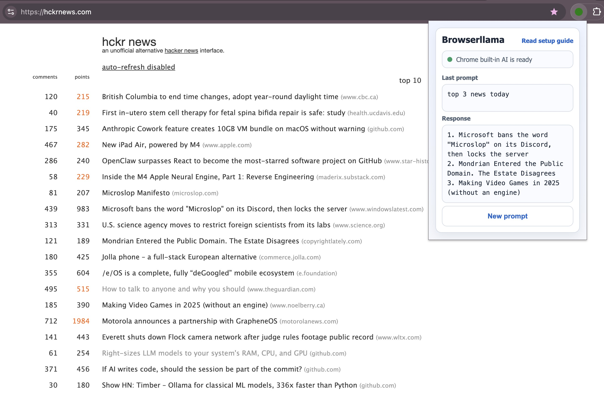

Local-first prompts
Ask questions against page content without sending prompts to hosted SaaS APIs.
Browserllama lets you ask questions about the current page using local models. Use Ollama or MLX for full local control, or switch to Chrome built-in AI on supported builds.
Current Browserllama popup UI.

Focused, practical features for local-first browsing assistance.
Ask questions against page content without sending prompts to hosted SaaS APIs.
Switch between Ollama, MLX, and Chrome built-in AI directly from the popup.
Pick your local Ollama or MLX model in popup settings and keep your preferred default.
Use this page for setup and troubleshooting when local AI is not ready yet.
Choose one provider path (Ollama, MLX, or Chrome built-in AI).
ollama serve.ollama pull deepseek-r1:8b.src/ in chrome://extensions with Developer Mode enabled.brew install pipx, pipx ensurepath, pipx install mlx-lm.mlx_lm.server --model mlx-community/Qwen2.5-7B-Instruct-4bit.http://localhost:8080/v1 (change popup endpoint only if you run a custom host/port).chrome://flags.Fast fixes for the setup failures users hit most often.
ollama --version in your terminal.ollama serve and keep it running.http://localhost:11434 in your browser.ollama list.deepseek-r1:8b or qwen2.5:7b-16k.mlx_lm.generate --help.mlx_lm.server --model mlx-community/Qwen2.5-7B-Instruct-4bit.http://localhost:8080/v1/models in your browser.http://localhost:9000/v1).chrome://flags and enable built-in AI related flags (names can change by version): Prompt API / Gemini Nano / optimization model flags.typeof LanguageModel or window.ai?.languageModel.chrome://flags for "AI", "Prompt", and "Gemini Nano".
Common Browserllama questions with direct answers.
A Chrome extension that lets you ask AI questions about the active page using local providers.
Not always. You can use Ollama, MLX, or switch to Chrome built-in AI if your Chrome supports it.
Install from ollama.com, run ollama serve, then pull a model like ollama pull deepseek-r1:8b.
Load the src/ folder from this repository in chrome://extensions.
Check provider status in popup first, then verify Ollama/MLX server + model readiness or Chrome built-in AI availability.
http://localhost:8080/v1. Browserllama probes availability with GET /models and uses POST /chat/completions.
Enable current built-in AI related flags in chrome://flags, then relaunch and retest. Names vary by Chrome version, so search by keyword.